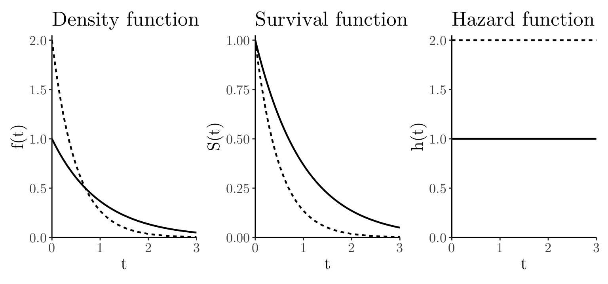

t_seq <- seq(from = 0, to = 3, length.out = 100); rates <- c(1, 2)
df_combined <- lapply(rates, function(par) { data.frame(t = t_seq, par = factor(paste0("par = ", par)), ft = dexp(t_seq, rate = par), St = 1 - pexp(t_seq, rate = par), ht = dexp(t_seq, rate = par) / (1 - pexp(t_seq, rate = par))) }) %>% bind_rows()
custom_theme <- theme_bw() + theme(panel.grid.major = element_blank(), panel.grid.minor = element_blank(), panel.border = element_blank(), axis.line.x = element_line(linewidth = 0.5, color = "black"), axis.line.y = element_line(linewidth = 0.5, color = "black"), text = element_text(size = 16, family = "Latin Modern Roman 10"), legend.position = "none")
p1 <- ggplot(df_combined, aes(x = t, y = ft, linetype = par)) + geom_line(linewidth = 0.8) + labs(x = "t", y = "f(t)", title = "Density function" ) + scale_x_continuous(expand = expansion(mult = c(0, 0))) + scale_y_continuous(limits = c(0, 2.05 ), expand = expansion(mult = c(0, 0))) + custom_theme
p2 <- ggplot(df_combined, aes(x = t, y = St, linetype = par)) + geom_line(linewidth = 0.8) + labs(x = "t", y = "S(t)", title = "Survival function") + scale_x_continuous(expand = expansion(mult = c(0, 0))) + scale_y_continuous(limits = c(0, 1.025), expand = expansion(mult = c(0, 0))) + custom_theme
p3 <- ggplot(df_combined, aes(x = t, y = ht, linetype = par)) + geom_line(linewidth = 0.8) + labs(x = "t", y = "h(t)", title = "Hazard function" ) + scale_x_continuous(expand = expansion(mult = c(0, 0))) + scale_y_continuous(limits = c(0, 2.05 ), expand = expansion(mult = c(0, 0))) + custom_theme
p1 + p2 + p3